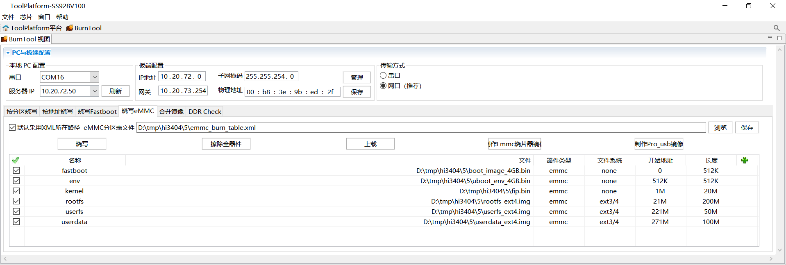
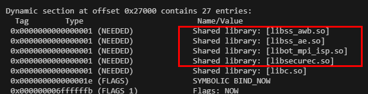
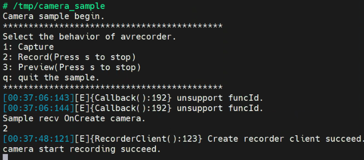

OpenHarmony Small 版本使用指南
前言
本文档基于OpenHarmony 5.1.0 Release版本适配Hi3403V100/Hi3519AV200，支持OpenHarmony Small型系统运行媒体、图形基本功能，支持XTS认证。
说明：
- 本文以Hi3403V100为例，未有特殊说明，Hi3519AV200与Hi3403V100内容一致。
- Hi3403V100和Hi3519AV200上运行OpenHarmony依赖同一个SS928V100_SDK版本包。
与本文档相对应的产品版本如下。
Hi3403V100与Hi3519AV200同为4K60 Ultra-HD Smart IP Camera SOC，在CPU、ISP、编解码等基础能力上保持一致。下表列出了芯片平台、对应开发板名称及核心差异。
芯片平台 |
开发板 |
AI算力 |
芯片手册 |
|---|---|---|---|
Hi3403V100 |
hispark_aifly |
10.4 TOPS (INT8) |
|
Hi3519AV200 |
hispark_aiflylite |
2.5 TOPS (INT8) |
- 两款芯片均内置四核 ARM Cortex A55@1.4GHz、双核 Vision Q6 DSP、32bit MCU@500MHz。
- 两款芯片均支持4K60 H.265/H.264编码、10路1080p30解码、4路sensor输入、AI ISP等核心能力。
- Hi3403V100 AI算力更强，面向高端视觉融合计算场景；Hi3519AV200功耗更低，面向行业市场。
- 编译时Hi3403V100对应 product-name 为 ipcamera_hispark_aifly_linux，Hi3519AV200对应 ipcamera_hispark_aiflylite_linux。
在本文中可能出现下列标志，它们所代表的含义如下。


本文档（本指南）主要适用于以下工程师：
- 技术支持工程师
- 软件开发工程师
修订记录累积了每次文档更新的说明。最新版本的文档包含以前所有文档版本的更新内容。
版本介绍
OpenHarmony版本
Hi3519AV200和Hi3403V100 OpenHarmony版本基于5.1.0 Release版本开发。
-
OpenHarmony 5.1.0社区发布地址：
https://gitee.com/openharmony/docs/blob/master/zh-cn/release-notes/OpenHarmony-v5.1.0-release.md
-
OpenHarmony社区漏洞发布地址：
https://gitee.com/openharmony/security/blob/master/zh/security-disclosure/README.md
OpenHarmony Small版系统源码移植修改说明
- 为提升代码下载效率，裁剪非必要的组件，主要裁剪的软件如
os/OpenHarmony/manifest/**.xml注释所见。如果产品开发需要引入，请放开组件代码仓的注释即可。 - 完成芯片SOC软件和开发板的代码仓适配，如：os/OpenHarmony/vendor/hisilicon、os/OpenHarmony/device/soc/hisilicon、os/OpenHarmony/device/board/hisilicon
- 完成Linux6.6内核升级，内核升级需要融合芯片SDK kernel特性和OpenHarmony内核特性。
- 基于OpenHarmony Small型系统XTS最小集系统的Config.json文件范围适配OpenHarmony的子系统，完成图形、媒体和增强特性开发，满足媒体和图形Sample功能及所有XTS用例。对开源鸿蒙组件的定制化修改均已制作成patch，存放于
os/OpenHarmony/device/soc/hisilicon/patches/目录下。
- 该OpenHarmony版本主要适配Hi3519AV200和Hi3403V100 ，涉及多个OpenHarmony原生仓的修改，解决编译、功能问题。
- 鸿蒙版本的uboot是直接使用各芯片SDK版本的uboot，所以对各芯片的各类介质Uboot可以在原SDK版本按相关文档进行编译。
- 鸿蒙版本默认使用的是toybox，不支持vi，当客户需要使用vi时，可以切换为busybox。
- 在Hi3519AV200和Hi3403V100芯片配套的开发板上配置IP和mount指令可参考如下指令：
开发环境
搭建OpenHarmony开发环境
搭建OpenHarmony Small型系统编译环境

Ubuntu配置OpenHarmony开发环境，请参考OpenHarmony社区文档。
-
OpenHarmony官方社区参考地址
https://docs.openharmony.cn/pages/v6.0/zh-cn/OpenHarmony-Overview_zh.md
-
OpenHarmony编译构建指导
https://gitcode.com/openharmony/docs/blob/master/zh-cn/device-dev/subsystems/subsys-build-all.md
编译环境目前主要支持Ubuntu18.04和Ubuntu20.04（Ubuntu22.04暂不支持）。推荐使用“apt-get和pip3 install命令安装”，如图2所示。

如果出现图3问题"Your system shell isn't bash..."，请执行如下命令。

搭建代码开发环境
OpenHarmony环境下配置Hi3403V100和Hi3519AV200配套产品的编译目录。
-
下载HiSpark社区Pegasus仓代码，由于ss928v100_clang和ss928v100_gcc为Pegasus的子仓，而OpenHarmony使用LLVM-Clang工具链的SDK，故此步骤下载得到Pegasus和ss928v100_clang代码目录。
git clone https://gitee.com/HiSpark/pegasus.git cd pegasus git submodule init git submodule update platform/ss928v100_clang通过以上步骤操作，得到Pegasus项目文件目录如下。
pegasus/ ├── os/OpenHarmony │ ├── device │ │ └── soc/hisilicon/patches # OpenHarmony源码补丁（按子系统分类，对原生代码的定制化修改） │ ├── kernel # 内核配置和补丁（linux-6.6） │ ├── vendor # 海思产品配置（hispark_aifly_linux、hispark_aiflylite_linux） │ └── manifest │ ├── devboard_hispark_aifly_5.1.0.xml # repo清单文件（定义代码仓库列表） │ └── prebuilts_setup.sh # 预编译环境准备脚本 ├── platform/ss928v100_clang # SDK源码和二进制库（内核驱动、Sample、开源软件包） └── vendor └── rkh/patches # 润开鸿OpenHarmony源码补丁（按子系统分类，增强系统功能和驱动支持）os/OpenHarmony目录包含海思芯片适配OpenHarmony的补丁、配置和构建脚本。其中manifest/devboard_hispark_aifly_5.1.0.xml为repo清单文件，定义了OpenHarmony 5.1.0 Release版本需要同步的代码仓库列表，已针对Small型系统优化，剔除了非必要的代码仓，并将常用修改的代码仓（kernel_linux_config、kernel_linux_patches、device_soc_hisilicon、device_board_hisilicon、vendor_hisilicon）注释掉远程下载，直接使用本地子目录。platform/ss928v100_clang目录是SS928V100的SDK源码和二进制库，包含内核驱动源码、Sample源码及开源软件包。vendor目录是生态伙伴（易百纳、野火、迅为、润开鸿、中山旷视等）基于Pegasus平台做的增量特性开发，包括板卡适配补丁、Demo示例、第三方开源软件编译指南等，与os/OpenHarmony/vendor（海思原厂产品配置）有所区别。
说明：由于SS927V100和SS928V100相似，因此SS927V100的SDK能复用SS928V100的SDK源码，共用
os/OpenHarmony/device/soc/hisilicon/ss928v100/sdk_linux目录。 -
进入
os/OpenHarmony目录，使用repo工具初始化并同步OpenHarmony代码。repo清单文件devboard_hispark_aifly_5.1.0.xml已针对Small型系统优化，剔除了非必要的代码仓。cd os/OpenHarmony repo init -u https://gitee.com/HiSpark/pegasus.git -m os/OpenHarmony/manifest/devboard_hispark_aifly_5.1.0.xml repo sync -c repo forall -c 'git lfs pull'通过以上步骤，得到开源鸿蒙OpenHarmony-v5.1.0-release组件源码。
说明：- 清单文件中
kernel_linux_config、kernel_linux_patches、device_soc_hisilicon、device_board_hisilicon、vendor_hisilicon为常用修改的代码仓，已注释掉远程下载，直接使用os/OpenHarmony下对应的本地子目录。 - 同步完成后，执行
repo forall -c 'git lfs pull'拉取LFS大文件。
- 清单文件中
-
执行
os/OpenHarmony/manifest/prebuilts_setup.sh脚本，完成预编译环境准备。该脚本主要完成以下任务：- 修复
system_util.py和patch_process.py脚本中的已知问题 - 将
platform/ss928v100_clang目录拷贝至SDK目标路径 - 下载mbedtls v2.16.10源码包（存放至
os/OpenHarmony/device/soc/hisilicon/hi3403v100/sdk_linux/open_source/mbedtls/目录） - 下载arm-trusted-firmware v2.2源码包（存放至
os/OpenHarmony/device/soc/hisilicon/hi3403v100/sdk_linux/open_source/trusted-firmware-a/目录） - 调用
build/prebuilts_download.sh下载OpenHarmony编译工具链（clang、gn、ninja、cmake、nodejs等） - 通过sparse-checkout从kernel_linux_patches仓库下载
prebuilts目录 - 通过sparse-checkout从pegasus仓库下载
device/soc/hisilicon/common/platform目录 - 配置SDK工具链环境变量，将
os/OpenHarmony/prebuilts/clang/ohos/linux-x86_64/llvm/bin添加到PATH，执行command -v clang验证是否生效，并写入~/.bashrc持久化配置
- 修复
完成以上步骤后，项目目录结构如下。
pegasus
├── os/OpenHarmony
│ ├── applications
│ ├── arkcompiler
│ ├── base
│ ├── build
│ ├── commonlibrary
│ ├── developtools
│ ├── device
│ │ ├── board/hisilicon
│ │ └── soc/hisilicon
│ │ ├── patches
│ │ └── hi3403v100/sdk_linux
│ ├── docs
│ ├── domains
│ ├── drivers
│ ├── foundation
│ ├── interface
│ ├── kernel
│ ├── manifest
│ │ ├── devboard_hispark_aifly_5.1.0.xml
│ │ └── prebuilts_setup.sh
│ ├── prebuilts
│ │ └── clang/ohos/linux-x86_64/llvm/bin
│ ├── productdefine
│ ├── test
│ ├── third_party
│ ├── vendor
│ ├── build.sh
│ └── build.py
├── platform/ss928v100_clang
└── vendor
└── rkh/patches
配置显示框架 (DRM/FB)
系统默认使用 DRM 显示框架。如需切换回 FrameBuffer (FB) 显示框架，请按以下步骤配置：
-
修改产品配置文件
打开
os/OpenHarmony/vendor/hisilicon/hispark_aifly_linux/config.json，在"graphic"子系统的"graphic_utils_lite"组件中移除或注释掉 DRM 支持配置。 -
修改初始化脚本
打开
os/OpenHarmony/vendor/hisilicon/hispark_aifly_linux/init_configs/etc/init.d/S82ohos，找到加载驱动的命令行，移除-display drm参数或改为-display fb。 说明：- 配置完成后，需重新编译系统使配置生效。
- 若需恢复为 DRM 框架，请参考上述步骤重新添加配置项和参数。
版本编译
OpenHarmony编译
基于hispark_aifly和hispark_aiflylite的OpenHarmony版本编译方式遵循社区编译方式。
初次编译
-
进入hispark_aifly OpenHarmony代码根目录
os/OpenHarmony。 -
初次编译需要打补丁，添加编译参数
--patch，执行如下编译命令，成功之后显示=====build successful=====。./build.sh --product-name=ipcamera_hispark_aifly_linux --ccache --no-prebuilt-sdk --patch --gn-args build_xts=true 说明：若要编译hispark_aiflylite，执行如下编译命令
-
编译参数说明：
参数 说明 --product-name指定产品名称，如 ipcamera_hispark_aifly_linux或ipcamera_hispark_aiflylite_linux--ccache启用编译缓存，加速后续编译 --no-prebuilt-sdk跳过SDK子系统的编译 --patch初次编译时自动应用patches目录下的补丁文件 --gn-args build_xts=true启用XTS兼容性测试组件编译，用于通过OpenHarmony兼容性认证 说明：- patch配置见：
os/OpenHarmony/vendor/hisilicon/hispark_aifly_linux/patch.yml文件。 - 全量编译之前会先执行打patch操作，若patch应用失败，编译流程将中断。
- 当patch失败时，需先执行
rm -rf out清理输出目录，再重新触发编译命令。 - 如需撤销patch.yml中所有patch，执行
os/OpenHarmony/vendor/hisilicon/hispark_aifly_linux下的patch_revert.py脚本： - 也可手动撤销单个patch，例如撤销build仓patch，可在build目录下执行：
- patch配置见：
后续编译
后续编译（打完patch后）跳过打patch环节，去掉编译参数--patch，执行命令：
./build.sh --product-name=ipcamera_hispark_aifly_linux --ccache --no-prebuilt-sdk --gn-args build_xts=true
OpenHarmony版本需全量重编时，可以先
rm -rf ./out，再重新执行编译命令。
ko文件签名
背景与原理
OpenHarmony Small版本内核开启了 CONFIG_MODULE_SIG 和 CONFIG_MODULE_SIG_FORCE 编译选项，强制要求所有加载的内核模块（.ko 文件）必须携带有效的数字签名。该机制用于防止恶意或篡改的内核模块被加载到系统中，从而提升系统的安全性。
为什么内核和ko必须配套编译？
每次完整编译内核时，构建系统会在 certs/ 目录下自动生成一对新的签名密钥（signing_key.pem 私钥和 signing_key.x509 公钥）。内核镜像会将公钥编译进自身，用于后续验证模块签名；而 .ko 文件则需要使用对应的私钥进行签名。
如果先编译内核生成了密钥A，用密钥A签名了KO，随后又触发了内核重新编译生成了密钥B，此时内核内置的公钥变为B，而KO的签名仍是A，验证将失败并报错：
Loading of module with unsupported crypto is rejected
insmod: failed to load xxx.ko:Key was rejected by service
因此，必须确保签名KO时使用的密钥与最终烧录的内核镜像内置的密钥完全一致。
新增ko文件签名流程
当您需要新增或替换 .ko 文件时，必须使用配套的签名脚本进行处理。请按照以下步骤操作：
-
确保内核已编译
签名脚本依赖内核编译产物中的签名工具和密钥。请先执行一次完整的内核编译，确保以下路径存在：
- 签名工具：
${OHOS_OUTDIR}/kernel/${KERNEL_VERSION}/scripts/sign-file - 私钥：
${OHOS_OUTDIR}/kernel/${KERNEL_VERSION}/certs/signing_key.pem - 公钥：
${OHOS_OUTDIR}/kernel/${KERNEL_VERSION}/certs/signing_key.x509
- 签名工具：
-
准备待签名的ko文件
将编译生成的新
.ko文件放置到同一个目录中（例如./my_kos/）。 -
执行签名脚本
使用
batch_sign_ko.sh脚本对目录下的所有.ko文件进行批量签名：# 进入pegasus根目录 cd pegasus # 执行签名（假设ko文件在 ./my_kos/ 目录下） ./os/OpenHarmony/device/board/hisilicon/hispark_aifly/kernel/batch_sign_ko.sh ./my_kos/脚本会自动检测
OHOS_OUTDIR和KERNEL_VERSION，并使用 SHA-512 算法进行签名。已成功签名的文件会被自动跳过。 -
替换并烧录
将签名后的
.ko文件替换到对应的系统镜像打包目录中，重新打包并烧录镜像。
- 签名步骤必须在内核编译完成之后、镜像打包之前执行。
- 若中途重新编译了内核，请重新对所有
.ko文件进行签名。
uboot编译
- 系统默认提供
os/OpenHarmony/device/soc/hisilicon/hi3403v100/uboot/boot_image_4GB.binuboot 镜像，可直接用于烧写。若需要自行编译 uboot，请参考以下步骤。- 编译前请先阅读
os/OpenHarmony/device/soc/hisilicon/hi3403v100/sdk_linux/open_source/u-boot/readme.txt，按指引下载并安装 u-boot 开源软件。
编译 uboot 需要进入 SDK 的 osdrv 目录，SDK 路径为 os/OpenHarmony/device/soc/hisilicon/hi3403v100/sdk_linux/。
-
下载并配置交叉编译工具链。
bootloader 使用
aarch64-openeuler-linux-gnu64bit 工具链进行编译，下载地址：https://gitee.com/openeuler/yocto-meta-openeuler/releases下载后将其添加到环境变量中：
-
进入 osdrv 目录，执行编译命令。
cd os/OpenHarmony/device/soc/hisilicon/hi3403v100/sdk_linux/osdrv/ make LLVM=1 BOOT_MEDIA=emmc CHIP=ss928v100 all -j 20 说明：CHIP：可选ss928v100或ss927v100，默认为ss928v100。BOOT_MEDIA：根据启动介质选择，spi（spi nor 或 spi nand）、nand（并口 nand）、emmc。LLVM=1：使用 musl 工具链编译；不指定则使用 glibc 工具链。
-
单独编译 uboot（快速启动或非安全启动的 Boot Image）。
-
清除编译文件。
编译成功后，生成的 boot_image.bin 镜像文件位于 os/OpenHarmony/device/soc/hisilicon/hi3403v100/sdk_linux/osdrv/pub/ss928v100_emmc_image_musl/ 目录下。
SDK sample编译
注意：
在鸿蒙系统下运行SDK sample前需要关闭媒体和图形进程，具体操作方法为：
- 修改产品配置文件
os/OpenHarmony/vendor/hisilicon/hispark_aifly_linux/config.json，删除window、graphic、multimedia和applications子系统配置。- 修改初始化脚本
os/OpenHarmony/vendor/hisilicon/hispark_aifly_linux/init_configs/init_linux_openharmony.cfg，删除"start media_server",和"start wms_server",。- 参考OpenHarmony编译重新编译鸿蒙。
- 完成单板烧写镜像后，即可运行SDK sample。
SDK包中提供内核驱动源码和Sample源码，可以通过源码进行编译。编译SDK sample前，需要先配置SYSROOT_PATH环境变量。
-
配置之前请先执行OpenHarmony编译，编译生成依赖的sysroot。
说明：使用LLVM-Clang工具链来编译SDK sample时，会依赖OpenHarmony编译后的产物：os/OpenHarmony/out/hispark_aifly/ipcamera_hispark_aifly_linux/sysroot，因此需要提前进行OpenHarmony编译。
-
假设工具链的sysroot路径为
/path/to/pegasus/os/OpenHarmony/out/hispark_aifly/ipcamera_hispark_aifly_linux/sysroot，将工具链的sysroot设置到环境变量SYSROOT_PATH。 -
检查SYSROOT_PATH配置是否生效。
-
进入
os/OpenHarmony/device/soc/hisilicon/hi3403v100/sdk_linux/smp/a55_linux/mpp/sample，执行：编译完成后，各sample可执行文件位于
os/OpenHarmony/device/soc/hisilicon/hi3403v100/sdk_linux/smp/a55_linux/mpp/sample对应的目录下。
sample中使用了SDK_init和SDK_exit来进行MPP各个模块的初始化和退出。hnr需要使用pqp模块，SDK_init中默认未初始化pqp模块，因此需要单独对hnr的sample进行重编，具体步骤为：
- 将os/OpenHarmony/device/soc/hisilicon/hi3403v100/sdk_linux/smp/a55_linux/mpp/sample/common/sdk_module_init.h头文件中的宏定义INIT_PQP修改为1；
- 进入hnr目录重编，命令如下。
版本烧写
OpenHarmony镜像烧写
hispark_aifly和hispark_aiflylite OpenHarmony版本，编译好的镜像文件在如下目录。
需要烧录的镜像文件包括：
| 文件 | 说明 |
|---|---|
boot_image.bin |
bootloader镜像 |
uboot_env.bin |
uboot环境变量 |
fip.bin |
内核镜像（含ATF安全加固头） |
rootfs_ext4.img |
根文件系统镜像 |
userfs_ext4.img |
用户文件系统镜像 |
userdata_ext4.img |
用户数据镜像 |
emmc_burn_table.xml |
烧写配置文件 |
- OpenHarmony编译出的
os/OpenHarmony/out/hispark_aifly/ipcamera_hispark_aifly_linux目录下默认是EMMC。 - 参考uboot编译生成boot_image.bin。
-
采用ToolPlatform工具烧录镜像，加载
emmc_burn_table.xml配置文件。
-
第一次烧写需要配置bootargs，脚本如下。
setenv bootargs 'mem=512M console=ttyAMA0,115200 clk_ignore_unused rw rootwait root=/dev/mmcblk0p4 rootfstype=ext4 blkdevparts=mmcblk0:512K(fastboot),512K(env),20M(kernel),200M(rootfs),50M(userfs),100M(userdata)'; setenv bootcmd 'mmc read 0 0x50000000 0x800 0xA000; bootm 50000000'; setenv bootdelay 1; sa; re 说明：mmc读取数值的计算方法：使用程序员计算器，计算过程选择DEC十进制转换、最后结果转换成HEX进制。举例说明0xA000由来，内核镜像size大小20M，mmc每512字节为一个单位，2010241024/512=0xA000 (计算结果转换成HEX进制)。
硬件单板烧写
Hi3403V100和Hi3519AV200硬件单板量产阶段需一次性烧写KEY0，不可重复烧写。若KEY0未烧写，硬件会拦截密钥派生操作，无法正常使用硬件密钥完成加解密操作。
Hi3403V100硬件单板烧写KEY0步骤如下。
-
进入 U-Boot 命令行，依次执行如下命令
mw 0x10122008 0x6 # 以下四行为设置需要烧写的 key， # 以 key=128'h00010203_04050607_08090a0b_0c0d0e0f 为例 mw 0x1012200C 0x0c0d0e0f mw 0x10122010 0x08090a0b mw 0x10122014 0x04050607 mw 0x10122018 0x00010203 mw 0x10123000 0x2 mw 0x10122004 0x1acce551 警告：
警告： 上述烧写命令中 key 的烧写只是一个参数，实际烧写请使用随机数，不可使用示例中的 key。
-
对单板上下电重启，烧写的key0生效（reboot软重启无法生效，需上下电才能生效），再跑XTS用例可看出XTS认证的huks用例都PASS。
XTS测试说明
-
XTS测试套编译需要指定参数--gn-args build_xts=true，参考如下示例。
./build.sh --product-name=ipcamera_hispark_aifly_linux --gn-args build_xts=true --ccache --no-prebuilt-sdk编译结束之后会在os/OpenHarmony/out/hispark_aifly/ipcamera_hispark_aifly_linux/目录下生成suites文件夹，里面的acts文件即为测试套。
-
XTS环境搭建与测试请参考OpenHarmony社区兼容性测评服务指导：
https://www.openharmony.cn/certification/document/guid
请参考链接中“兼容性测试执行环境搭建”章节，配置Windows环境，安装必要的软件。hispark_aifly和hispark_aiflylite是小型系统，请参考“小型系统应用兼容性测试指导”章节完成环境搭建和配置。
XTS测试需要的资源文件，请下载社区OpenHarmony 5.1.0 Release 小型系统ACTS资源文件，替换acts\resource目录下的文件。
下载地址：https://www.openharmony.cn/certification/document/xts

 须知：
须知： OH5.0及以前社区下载的resource\tools\query.bin是32位的，无法在64位的设备上使用。客户需要使用自行编译生成的query.bin文件（os/OpenHarmony/out/hispark_aifly/ipcamera_hispark_aifly_linux/suites/acts/resource/tools/query.bin）。 OH5.1社区下载resource没有tools目录。
XTS测试套补充说明
带屏幕和应用的产品，需要测试ActsAbilityMgrTest和ActsBundleMgrTest。若客户产品需过鸿蒙XTS认证A标，需要测试此两项。
- 请os/OpenHarmony/test/xts/acts/build_lite/BUILD.gn文件第106行和第107行的代码（删除前面的“#”号）。
- 重新编译工程后，在acts/testcases/ability目录下生成测试套ActsAbilityMgrTest.bin，在acts/testcases/appexecfwk目录下生成测试套ActsBundleMgrTest.bin。
XTS测试命令说明
-
全量执行命令
-
单模块执行命令
-
多模块执行命令
XTS申请测评注意事项
-
请参考《OpenHarmony设备兼容性规范x.x自检表_小型系统 .xlsx》 sheet1表格的规范要求修改配置文件os/OpenHarmony/vendor/hisilicon/hispark_aifly_linux/hals/utils/sys_param/vendor.para，自行设置产品信息。
OpenHarmony设备兼容性规范自检表下载地址：https://www.openharmony.cn/certification/document/pcs/

-
填写申请测评电子流的时候需要上传PCID.sc文件，请从out目录下获取（os/OpenHarmony/out/hispark_aifly/ipcamera_hispark_aifly_linux/PCID.sc）。
-
送测时需要执行全量XTS，acts\reports目录下生成的测试报告摘要（summary_report.html）里面必须包含产品信息。

-
请按照如下目录准备测评材料。注意提交测评的外观图片要和送测的实物保持一致；且芯片丝印要带有芯片对外传播名称。

硬件单板烧写
SS928V100和SS927V100硬件单板烧写KEY0步骤。
-
进入 U-Boot 命令行，依次执行如下命令
mw 0x10122008 0x6 # 以下四行为设置需要烧写的 key， # 以 key=128'h00010203_04050607_08090a0b_0c0d0e0f 为例 mw 0x1012200C 0x0c0d0e0f mw 0x10122010 0x08090a0b mw 0x10122014 0x04050607 mw 0x10122018 0x00010203 mw 0x10123000 0x2 mw 0x10122004 0x1acce551 警告： 上述烧写命令中 key 的烧写只是一个参数，实际烧写请使用随机数，不可使用示例中的 key。
-
对单板上下电重启，烧写的key0生效（reboot软重启无法生效，需上下电才能生效），再跑XTS用例可看出XTS认证的huks用例都PASS。
配置telnetd无密码连接使用
OpenHarmony5.1 toybox的telnetd连接默认需要密码，按如下两种方法配置可正常使用无密码连接。
-
进入板端执行如下命令可直接修改/etc/passwd文件
-
通过本地PC上挂载NFS服务器，把板端/etc/passwd拷贝到本地PC上完成修改
-
修改板端passwd，需先mount本地服务器，把板端/etc/passwd拷贝到本地服务器，对本地passwd文件按图2方式修改，再拷贝回去替换板端/etc/passwd文件。
图 1 修改前:（root
 0:0:::/bin/false）
0:0:::/bin/false） 
图 2 修改后:（root::0:0::/root:/bin/sh）

-
修改后使用telnet连接无需密码。
媒体功能使用指导
-
在os/OpenHarmony/vendor/hisilicon/hispark_aifly_linux/config.json文件中，新增子系统。
{ "subsystem": "arkui", "components": [ { "component": "ui_lite", "features":[ "ui_lite_enable_graphic_font_config = true" ] } ] }, { "subsystem": "graphic", "components": [ { "component": "graphic_utils_lite", "features":[] }, { "component": "surface_lite", "features":[] } ] }, { "subsystem": "window", "components": [ { "component": "window_manager_lite", "features":[] } ] }, { "subsystem": "multimedia", "components": [ { "component": "camera_lite", "features":[] }, { "component": "media_lite", "features":[] }, { "component": "audio_lite", "features":[] }, { "component": "media_service", "features":[] } ] }, -
在os/OpenHarmony/vendor/hisilicon/hispark_aifly_linux/init_configs/init_linux_openharmony.cfg文件中，新增代码，启动媒体服务如下：

-
在编译版本之前，需要重新编译libsns_hy_s0603.so，因为此库动态加载的时候，会报链接的错误，所以需要修改编译脚本进行重新编译，编译脚本路径如下：
os/OpenHarmony/device/soc/hisilicon/hi3403v100/sdk_linux/smp/a55_linux/mpp/cbb/isp/user/sensor/ss928v100/hy_s0603/Makefile
修改方式如图2所示。

需要新增的链接依赖项：-lot_isp -lsecurec -lss_ae -lss_isp -lss_awb -L$(REL_LIB)
编译完成后libsns_hy_s0603.so 会生成在os/OpenHarmony/device/soc/hisilicon/hi3403v100/sdk_linux/smp/a55_linux/mpp/out/lib目录下面，还原所有修改的链接依赖项，然后可直接进行OpenHarmony的版本编译。
另一种解决方式：
如果编译环境上有patchelf工具，可以通过如下命令为libsns_hy_s0603.so添加链接依赖，而不用重新编译：
patchelf --add-needed libss_awb.so libsns_hy_s0603.so
patchelf --add-needed libss_ae.so libsns_hy_s0603.so
patchelf --add-needed libot_mpi_isp.so libsns_hy_s0603.so
patchelf --add-needed libsecurec.so libsns_hy_s0603.so
通过如下命令验证是否成功添加链接依赖：
readelf -d libsns_hy_s0603.so
出现如图显示即OK：

-
如果有HDMI输出需要的，需要手动打开图形层服务，具体操作如下：
单板执行命令：./bin/wms_server & 打开图形层服务，此命令只需要执行一次，重复执行会导致报错。
须知： 媒体的所有sample都需要按照指定的命令进行退出操作，默认是输入q退出。
预览功能


录制功能
-
单板上下电，执行/tmp/camera_sample。
须知： 录制文件默认保存在单板/userdata/norm/文件夹。如若需要修改录制文件保存的路径，修改os/OpenHarmony/applications/sample/camera/media/camera_sample.cpp 218行代码，对应图1中的DEFAULT_SAVE_PATH变量。

-
按提示输入2。

-
来回移动下sensor的位置，确保录制的图像是动态的，输入s，回车，再输入q，回车，结束录制。

-
录制的视频保存在如下位置。

可以用后续的player_sample播放。
说明： 手动修改系统时间方式，使用date命令：date -u "YYYY-MM-DD HH
 ss"，例如：date -u "2024-04-10 12:00:00"。具体业务场景建议设备与服务端进行时间校准。
ss"，例如：date -u "2024-04-10 12:00:00"。具体业务场景建议设备与服务端进行时间校准。
播放功能

采集H264码流功能
媒体子系统提供的Demo仅用于OpenHarmony基础功能测试，商用业务场景需要基于OpenHarmony API自行开发。
sensor切换指导
默认sensor是hy_s0603，时序是1080P 60帧，VI采集时是30帧，最终显示的输出是60帧。
同时支持hy_s0603，时序是4K 30帧，VI采集时是30帧，最终显示的输出也是30帧。
若需要从1080P切换为4K，步骤如下：
- 在foundation/multimedia/media_lite/services目录新增cameradev_hy_s0603_4k30_928.ini，并在该文件中适配4k对应参数。
-
在foundation/multimedia/media_lite/services/BUILD.gn文件中，将cameradev_hy_s0603_928.ini替换为cameradev_hy_s0603_4k30_928.ini。

-
重新编译，烧写。
音频采集功能
-
单板上下电，如果要测试talkvqe的功能，需要先执行export LD_PRELOAD=/usr/lib/libsecurec.so:/usr/lib/libvqe_hpf.so
预先把需要的so路径加载进来。
-
执行/tmp/audio_capature_sample。

-
按照提示输入参数，当前支持PCM、AAC_LC、G711A、G711U格式。
-
输入s或S，开始录制，输入p或P，停止录制，输入q或Q，退出录制。

-
录制成功的文件保存在/userdata目录，可以使用player_sample播放。

图形示例应用使用指导
图形子系统提供两个示例应用。包含控件示例应用，和窗口示例应用。控件示例应用主要覆盖图形子系统的控件能力，例如Button、Label、ScrollView等。窗口示例应用主要覆盖窗口管理能力，包含窗口的创建、删除、以及位置设置。
预置条件
打开图形子系统，步骤如下：
-
在os/OpenHarmony/vendor/hisilicon/hispark_aifly_linux/config.json文件，"subsystems"标签中添加如下代码。
{ "subsystem": "arkui", "components": [ { "component": "ui_lite", "features":[ "ui_lite_enable_graphic_font_config = true" ] } ] }, { "subsystem": "graphic", "components": [ { "component": "graphic_utils_lite", "features":[] }, { "component": "surface_lite", "features":[] } ] }, { "subsystem": "window", "components": [ { "component": "window_manager_lite", "features":[] } ] }, -
重新编译烧写。
资源路径
表1中描述了示例应用依赖的资源文件，以及资源资源文件的目录(路径相对于OpenHarmony根目录)
表 1 资源路径说明
设备端需具备条件
- 连接HDMI显示设备，如显示器、电视。
- 确认板端能访问到测试需要文件。例如，通过tftp进行网络的挂载，或者使用SD卡。
- 确认设备驱动gfbg.ko、ot_tde.ko已加载（可在板端使用lsmod命令查看）。
- (如需支持鼠标)执行“echo host>/proc/10320000.usb30drd/mode”。
- 执行"wms_server &"，确认wms_server进程正常启动（在板端top命令查看当前运行进程是否存在该进程，且显示器点亮为蓝屏），移动鼠标，如果无鼠标，执行“cat /dev/input/event0”。
实例应用说明
sample_window
验证步骤
-
配置网络；
-
挂载可执行文件；
-
执行sample_window。
sample_ui

在rootfs中打包自定义文件或目录
在rootfs中打包自定义文件时，可根据实际业务场景需求选择在"在rootfs中新增目录打包文件"或者"往rootfs现有目录下打包文件"章节指导应用。
在rootfs中新增目录打包文件
-
修改os/OpenHarmony/vendor/hisilicon/hispark_aifly_linux/fs.yml新增xxx目录。
- fs_dir_name: rootfs fs_dirs: - .... - source_dir: sbin target_dir: sbin - source_dir: usr/bin target_dir: usr/bin - source_dir: usr/sbin target_dir: usr/sbin - source_dir: data target_dir: storage/data - target_dir: proc - target_dir: mnt - source_dir: xxx target_dir: xxx 说明： 此过程会进行rootfs内容的拷贝，将source_dir下内容拷贝到target_dir，然后制作文件系统。
- source_dir是os/OpenHarmony/out（os/OpenHarmony/out/hispark_aifly/ipcamera_hispark_aifly_linux）目标文件目录。
- target_dir是文件系统下对应的目录，会创建rootfs/xxx文件目录。
-
为实现拷贝目标文件到os/OpenHarmony/out/hispark_aifly/ipcamera_hispark_aifly_linux/xxx目录下，在os/OpenHarmony/vendor/hisilicon/hispark_aifly_linux/init_configs\BUILD.gn文件可以修改为如下。
... copy("copy_xxx") { sources = [ "xxx/xxx.sh" ] outputs = [ "$root_out_dir/xxx/{{source_file_part}}" ] }最终xxx.sh可以放到rootfs/xxx目录下。
-
再修改外面一层的os/OpenHarmony/vendor/hisilicon/hispark_aifly_linux/BUILD.gn，增加copy_xxx为依赖。

-
在os/OpenHarmony目录下执行 rm -rf out/，再重新编译 ./build.sh --product-name=ipcamera_hispark_aifly_linux --ccache --no-prebuilt-sdk即可。

往rootfs现有目录下打包文件
参考os/OpenHarmony/vendor/hisilicon/hispark_aifly_linux/init_configs目录实现，拷贝xxx/xxx.sh文件到etc/xxx目录下。
-
先将要拷贝的文件放到对应目录中xxx/xxx.sh，同时修改os/OpenHarmony/vendor/hisilicon/hispark_aifly_linux/init_configs\BUILD.gn。
图 1 新增copy_xxx执行拷贝目标文件至etc/xxx

-
再修改外面一层的os/OpenHarmony/vendor/hisilicon/hispark_aifly_linux/BUILD.gn，增加copy_xxx为依赖。

-
重新编译，则xxx.sh会被打包到rootfs的etc/xxx/xxx.sh。

-
在os/OpenHarmony目录下执行 rm -rf out/，再重新编译./build.sh --product-name=ipcamera_hispark_aifly_linux --ccache --no-prebuilt-sdk即可。
在rootfs中生成软链接
如同时想生成yyy的软链接指向xxx.sh，则可修改os/OpenHarmony/vendor/hisilicon/hispark_aifly_linux/fs.yml，如下。
fs_symlink:
-
source: libc.so
link_name: ${fs_dir}/lib/ld-musl-aarch64.so.1
-
source: mksh
link_name: ${fs_dir}/bin/sh
-
source: ./
link_name: ${fs_dir}/usr/lib/a7_softfp_neon-vfpv4
-
source: mksh
link_name: ${fs_dir}/bin/shell
-
source: xxx.sh
link_name: ${fs_dir}/xxx/yyy
在os/OpenHarmony目录下执行 rm -rf out/，再重新编译./build.sh --product-name=ipcamera_hispark_aifly_linux --ccache --no-prebuilt-sdk即可。
基于shell脚本整目录拷贝到rootfs中
-
在os/OpenHarmony/vendor/hisilicon/hispark_aifly_linux目录中，新建图1所示的rootfs目录。

然后给上述新增的目录授予权限，执行如下命令。
-
在os/OpenHarmony/vendor/hisilicon/hispark_aifly_linux/BUILD.gn文件中新增copy_binary内容。
group("hispark_aifly_linux") { deps = [ "hals/utils/sys_param:vendor.para", "init_configs", "init_configs:init_fstab", "init_configs:init_initd", "init_configs:copy_xxx", ":copy_binary", ] } import("//build/lite/config/component/lite_component.gni") build_ext_component("copy_binary") { exec_path = rebase_path(".", root_build_dir) outdir = rebase_path("$root_out_dir") command = "./copy_binary_files.sh ${outdir}" }此新增脚本含义：调用build_ext_component执行command对应的命令。
-
新增copy_binary_files.sh脚本到当前目录os/OpenHarmony/vendor/hisilicon/hispark_aifly_linux/中，内容如下。
#! /bin/sh echo "--------------------- copy binary files to rootfs folder, current folder is $PWD ---------------------" mkdir -p $1/rootfs_binary_files cp -Rf ./rootfs/bin/* $1/rootfs_binary_files此脚本作用：将上面新增的源目录rootfs/bin/*所有文件和目录拷贝到os/OpenHarmony/out/hispark_aifly/ipcamera_hispark_aifly_linux/rootfs_binary_files目录中。备注：脚本可以自己根据业务情况调整和修改。
授予上述copy_binary_files.sh脚本执行权限，执行如下命令。
-
将rootfs_binary_files拷贝到rootfs中，还需要修改os/OpenHarmony/vendor/hisilicon/hispark_aifly_linux/fs.yml文件。
- fs_dir_name: rootfs fs_dirs: - source_dir: ${root_path}/out/preloader/${product_name}/system target_dir: system - source_dir: rootfs_binary_files target_dir: bin - source_dir: bin target_dir: bin ignore_files: - Test.bin - TestSuite.bin - query.bin - cve - checksum is_strip: TRUE如需要拷贝到自定义目录中，可根据在rootfs中新增目录打包文件修改。
-
在os/OpenHarmony目录下执行 rm -rf out/，再重新编译 ./build.sh --product-name=ipcamera_hispark_aifly_linux --ccache --no-prebuilt-sdk即可。